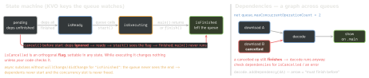

ios-platform · folio
In one line: An Operation is a single-shot, KVO-observable unit of work;
an OperationQueue starts it when isReady (every dependency
isFinished), caps parallelism with maxConcurrentOperationCount, and drops it
when it posts isFinished. Cancellation is a flag, dependencies are
ordering only (no data), and an async subclass must drive its own state
with KVO — or it never finishes.
Download PDF Print view LaTeX source


How it works
- Sync op: override
main(); finished when it returns (async work started inside is not awaited). Async op: overridestart()(neversuper.start()),isAsynchronous = true, ownisExecuting/isFinishedbehind a lock, KVO for both, finish exactly once — also when cancelled before starting. - A queue always calls
start()on a separate thread and ignoresisAsynchronous; it matters only when you callstart()yourself. b.addDependency(a): works across queues; “finished” includes cancelled; a cycle never becomes ready (silent hang). Results:breadsa.output(or an adapter op copies it).maxConcurrentOperationCountdefaults to −1 (system decides);1= serial, but order = readiness →queuePriority→ insertion.qualityOfService(.userInteractive … .background) sets the thread’s priority and energy class;queuePriority(.veryLow … .veryHigh) only reorders ready ops in one queue.BlockOperation: its blocks run concurrently, finished when all return.addBarrierBlock(iOS 13) waits for everything queued before it.isSuspendedstops starting ops.OperationQueue.main= serial, main thread;underlyingQueuetargets aDispatchQueue.completionBlockruns after finish on an arbitrary thread, and is set tonilonce it starts (iOS 8+).
Example — KVO-correct async Operation
class AsyncOperation: Operation {
private let lock = NSLock()
private var _exec = false, _done = false
private func locked<T>(_ f: () -> T) -> T {
lock.lock(); defer { lock.unlock() }; return f() }
override var isAsynchronous: Bool { true }
override var isExecuting: Bool { locked { _exec } }
override var isFinished: Bool { locked { _done } }
override func start() { // never super.start()
if isCancelled { finish(); return } // still must finish
willChangeValue(forKey: "isExecuting")
locked { _exec = true }
didChangeValue(forKey: "isExecuting")
run { self.finish() } } // subclass: async work
func run(_ done: @escaping () -> Void) { done() }
final func finish() { // exactly once
let keys = ["isExecuting", "isFinished"]
keys.forEach(willChangeValue(forKey:))
locked { _exec = false; _done = true }
keys.forEach(didChangeValue(forKey:)) }
}Operation vs GCD vs async/await
| Need | Operation | GCD | Swift concurrency |
|---|---|---|---|
| dependency graph | addDependency, cross-queue | group notify, by hand | async let, ordered await |
| cancel a graph | cancelAll…() sets flags | work item cancel(): only if not started | task.cancel() reaches child tasks |
| cap parallelism | maxConcurrent… | semaphore / serial queue | task group: seed n, add one per finish |
| observe state | KVO, progress (iOS 13) | — | — |
| delay | — | asyncAfter | Task.sleep(for:) |
Progress UI, subclassable reusable types, legacy code.
New code on async/await: task groups + Task.checkCancellation().
Traps
- Async op without the manual KVO → stuck “executing” forever.
cancel()does not stop a running op or itsURLSessionTask— checkisCancelledand cancel the task yourself.- Cancelled dependency = finished → the dependent still runs.
op.completionBlock = { use(op.result) }capturesopstrongly — a cycle until it runs; use[unowned op]. Hop to main for UI.- Adding the same instance twice / after it finished →
NSInvalidArgumentException. Single-shot. waitUntilAllOperationsAreFinished()/waitUntilFinished: trueon main → hang, watchdog0x8badf00d.
The two priorities, side by side
qualityOfService | raw | queuePriority | raw |
|---|---|---|---|
.userInteractive | 0x21 | .veryHigh | 8 |
.userInitiated | 0x19 | .high | 4 |
.default | -1 | .normal | 0 |
.utility | 0x11 | .low | -4 |
.background | 0x09 | .veryLow | -8 |
[1pt] QoS = which CPU/energy class the thread gets (across the whole system); queue priority = which ready op this queue starts first. Neither beats a dependency.